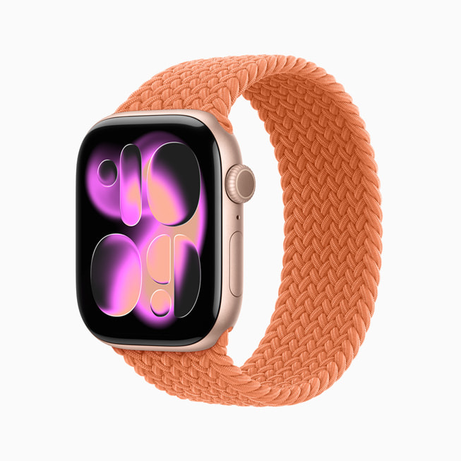

01 深黑负空间与黑色玻璃中心
02 紫红、洋红、蜜桃粉金的流体光带
03 曲面边缘压缩背景，内外颜色错位
04 细亮线、内暗缝与较宽的彩色厚边
02 紫红、洋红、蜜桃粉金的流体光带
03 曲面边缘压缩背景，内外颜色错位
04 细亮线、内暗缝与较宽的彩色厚边
本稿目标已根据更正改为聊天玻璃；不以数字形状与排版作为验收项。
官方表盘 → 梦境聊天材质研究 · 保留配色与深色折射关系，聊天布局为本次独立设计
返回梦境 ↗
本稿目标已根据更正改为聊天玻璃；不以数字形状与排版作为验收项。